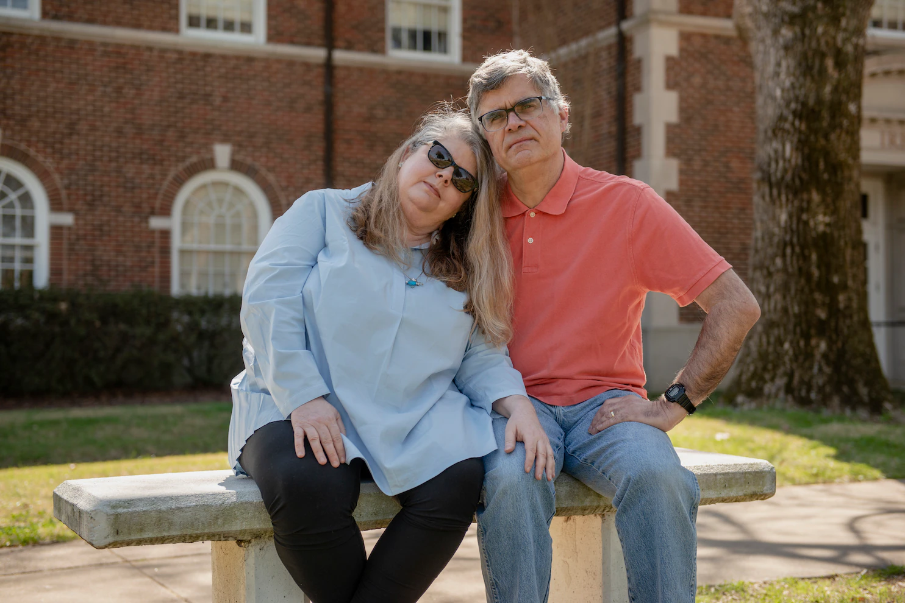

Nearly 45 million people hold $1.7 trillion in education loans. Here are some of their stories.
Article by the Washington Post
By Danielle Douglas-Gabriel, John D. Harden
APRIL 6, 2021
There are parents who have traded in their financial security for their children’s dreams. Husbands who have dropped out of college to care for family. Professionals whose bid for parity at work has pushed retirement further out of reach. And young graduates who forgo health insurance to pay down their loans.
These are some of the stories of the nearly 45 million people who hold $1.7 trillion in education loans in the United States. For some, repayment of the debt is an inconvenience. For others, it’s a burden.
Public misconceptions about who has student loans and why simplifies what is a nuanced and complex discussion over debt relief. Among the fastest growing categories of student loan borrowers over the last two decades are Black students and people age 50 and over, according to the latest Federal Reserve data.
Between 2010 and 2015, the number of outstanding loans by borrowers 50 and older grew by 80 percent — more than 32 percentage points higher than the growth of borrowers below 50 years old, according to Federal Reserve data. The trend has continued in recent years, according to data from the Education Department.
In 2019, the Federal Reserve found that borrowing rates were higher in areas with a majority of Black residents. The agency noted the income disparities are likely driven by lower-income students who are more likely to need loans to pay for school.
In 2019 borrowing rates in Black-majority Zip codes were higher than rates in Hispanic majority and White-majority Zip codes.
As the merits of student debt cancellation are debated, we talked to borrowers in these categories to show how debt affects people at various stages of their lives. Dozens shared their stories, but we narrowed the group down to a few who represent significant trends.
Emmanuel Dunagan sits on a bench near the Chicago River, a place he frequented as a student at the Illinois Institute of Art, on March 13, 2021. (Youngrae Kim for The Washington Post)
Emmanuel Dunagan, 28
Bellwood, Ill. | Illustrator
$42,495.52
Higher education is and forever will be a sensitive subject for me.
Coming out of high school, I took the year off to work and figure out what I wanted to do with my life. I knew I wanted to do something creative but didn’t know how to actualize that. Instead of going to a university, I enrolled in a community college — College of DuPage — and that is still to this day one of the best decisions I’ve made. It was affordable and gave me a chance to figure out my path.
When I finished in the winter of 2014, I transferred to the Illinois Institute of Art in Chicago. It was more affordable than other nearby schools and, I guess, I was persuaded by the marketing. I remember watching commercials and they presented themselves as the institution to be at if you were creative. You know, they had audio-visual programs, design, culinary classes, so it was quite a wide range.
When I was studying illustration at the Art Institutes, I thought I was getting a decent education at first. Some of the material felt dated, and I wasn’t being challenged. I thought about leaving, but money was still an issue and I had built a community there with faculty and students.
In my last year, I was so excited about the community I created and what lay ahead. And then in one week it was all washed away. It was July 2018 and I had two courses left, when we learned our school had lost its accreditation. Come to find out, they knew since January and told us nothing. No other school would take all of my credits. The choices were start all over again or finish out a program for a worthless degree.
I stayed. Everybody around me was scrambling to figure out what they’re going to do. And it wasn’t just students. It was the faculty, too. I watched a faculty member, who gave 10 years of her life to that institution, box up her office, just stunned. There was more than enough grief to go around. I had built a relationship with these people. So I was hurting for myself, but I was also grieving over everybody else’s circumstances.
I knew I had these looming student loans, but I was still trying to make sense of what was happening. I still had to find a job. I still had to find a way to use my degree. I still had to pay my bills.
I was so incredibly hurt and devastated because I did everything by the book, worked hard. Even though it is a piece of paper, it validates the journey. It validates the work.
But I refuse to let this situation define me. There was a point I was worried I wouldn’t get the job I have now because of what happened. Clearly, what matters to them was what I brought to the table during the interview process, my portfolio, my experience and my ideas. I’m grateful for that, but I still want accountability for what happened at the Art Institutes.
Stephanie and John Vanderslice, both professors of creative writing at the University of Central Arkansas, at the campus on March 20, 2021. (Brandon Dill for The Washington Post)
Stephanie Vanderslice, 54
Conway, Ark. | Creative Writing Professor
$111,000
My husband and I have taken on the equivalent of a mortgage for our sons’ educations. We are paying off a $15,000 loan for our oldest son. We also have another $72,000 in loans for our younger son, who has three semesters left that will mean borrowing another $24,000. He’s borrowed another $20,000 on his own.
We would have been paying more for our oldest, but he got very homesick his first year at Rochester Institute of Technology in New York. He came home and went to the public university where my husband and I teach, University of Central Arkansas.
We were very fortunate, in that case, because our university pays 80 percent of the cost for faculty children. After he graduated from our school, he lived with us for a year until he paid off the $2,500 loan he took out for RIT. He’s a very practical kid, probably why he’s a computer analyst.
My younger son, he’s a musician: a cellist. The University of Rochester’s Eastman School of Music had a professor he really wanted to study with, and it’s a good school for his field. He’s passionate about music, and he’s really good.
We wanted the boys to go where they thought was the best match and would give them the best opportunities. We always would say, “If it’s about education, we want to make it possible.” Both of our parents were that way.
But it’s such a different time than when we went to college.
I graduated with $8,000 in student loans in the 1990s. It wasn’t hard to pay that off. When I continued to graduate school, I got scholarships and fellowships. I worked the first year as a secretary and paid off the debt. My husband’s debt from the University of Virginia was even smaller than mine. We’re lucky. We’re clear of our own college debt, so we could take on some for our children.
When the boys were growing up, we didn’t really have much to save. While they were young, we were paying for day care. And then, we were very slowly promoted through the university. We were honestly just getting by. And then, when we finally got to stick our heads above water, college was like, wham!
I went into the Parent Plus program thinking, “Oh, this is the government, it will be a cheaper alternative to private loans, right?” And then, I started seeing the origination fees and the high interest. But private loans make me nervous and I assumed the government would treat us better than a bank. The other thing is, we live in a 101-year-old house. We have some equity in it, but we need that in case anything breaks down.
The way I look at it is we’re prioritizing education. We have the money now to pay, but it’s been hard, you know. We are at a point in our lives where we’re established. We have a house. We have had our children. If we have to be frugal for 10 or 15 more years, we can do it. We’re going to be really pinching pennies, and it will take longer to retire. We don’t have much of an emergency fund, and we just have to be really careful.